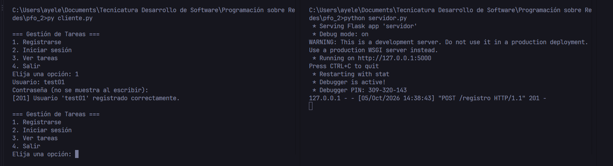
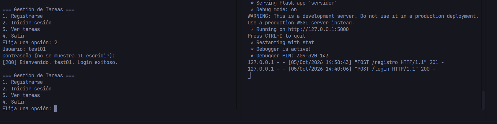
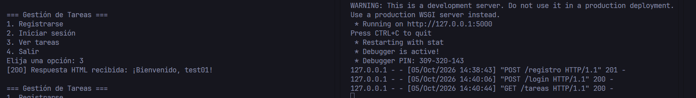
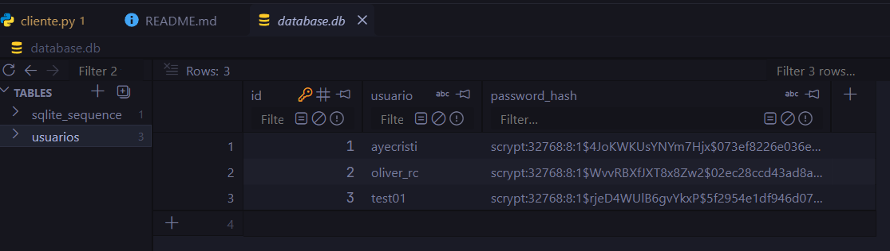

Sistema de Gestión de Tareas con API y Base de Datos
PFO 2: API REST en Flask con SQLite, contraseñas hasheadas y un cliente interactivo de consola.
Ver el código en GitHubQué hace el proyecto
Un servidor Flask permite registrar usuarios, iniciar sesión y consultar una página de bienvenida protegida. Los datos se guardan en un archivo SQLite local y las contraseñas nunca se almacenan en texto plano. Un cliente de consola, hecho con requests, consume la API de forma interactiva.
Esta página es solo una presentación del trabajo: GitHub Pages no ejecuta Python, por lo que la API corre localmente (ver más abajo).
Tecnologías
- Python y Flask para el servidor.
- SQLite (
database.db) como base de datos. - werkzeug.security para hashear contraseñas.
- requests para el cliente de consola.
Endpoints
| Método y ruta | Qué hace | Respuestas |
|---|---|---|
POST /registro | Recibe {"usuario", "contraseña"}, hashea la contraseña y crea el usuario. | 201 creado, 409 usuario existente, 400 datos faltantes |
POST /login | Verifica las credenciales contra el hash guardado e inicia la sesión. | 200 correcto, 401 credenciales inválidas, 400 datos faltantes |
GET /tareas | Muestra la plantilla HTML de bienvenida (requiere sesión iniciada). | 200 HTML, 401 sin sesión |
Cómo ejecutarlo
git clone https://github.com/<tu-usuario>/redes_pfo2.git
cd redes_pfo2
pip install -r requirements.txt
python servidor.pyEn otra terminal, dentro de la misma carpeta:
python cliente.pyEl README del repositorio detalla cada paso y la guía de pruebas con curl.
Capturas de las pruebas



/tareas
Respuestas teóricas
¿Por qué hashear contraseñas?
Guardar contraseñas en texto plano implica que, ante una filtración de la base de datos, todas las cuentas quedan comprometidas al instante. Un hash es una función de un solo sentido: a partir de la contraseña se obtiene una cadena irreversible, y al iniciar sesión se compara el hash de lo ingresado con el almacenado. Además, werkzeug.security agrega un salt aleatorio, de modo que dos usuarios con la misma contraseña tienen hashes distintos y se dificultan los ataques con tablas precalculadas. Como muchas personas reutilizan contraseñas, protegerlas también evita daños en otros servicios.
Ventajas de usar SQLite en este proyecto
- Sin servidor: la base es un único archivo local, sin instalar ni configurar un motor aparte.
- Incluida en Python: el módulo
sqlite3viene en la biblioteca estándar. - Portable: el proyecto se copia y funciona, ideal para desarrollo y entrega.
- Suficiente para el volumen esperado: soporta SQL estándar, transacciones y restricciones como
UNIQUE. - Fácil de inspeccionar y respaldar: copiar el archivo es un backup.
Para mucha concurrencia de escritura convendría migrar a PostgreSQL o MySQL.